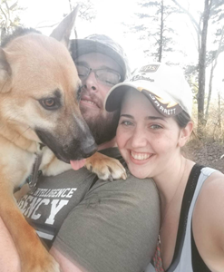

Me holding our german shepherd mix for a photo on our hike
Personal background: Born in Georgia, raised in North Carolina. Mostly lived in and
around Charlotte.
Professional Background: Various food and serviced jobs in highschool and college.
After my first degree, I worked some time as armed security for Bank of America on the corner of Trade and
Tryon in Charlotte. I then worked for a local Sheriff’s Office until I left to come back for my computer
science degree.
Academic background: 2019 UNCC Graduate with a degree in Criminal Justice, returning
for a second degree in Computer Science - Cybersecurity.
Background in this Subject: Lifelong fascination with computers and electronics.
Primary Computer Platform: Windows.
Courses I'm Taking and Why:
ITIS3135 - Web App Design and Development: Seemed interesting and many people
recommended it.
ITSC3146 - Intro to Operating Systems and Networking: Understanding these 2
topics are very important for computer science.
ITSC3155 - Software Engineering: Understanding these 2 topics are very
important for computer science.
ITIS3200 - Intro to Info Security & Privacy: Security and privacy is vital to
the career path I’m pursuing.
Funny/Interesting Item to Remember me by: I love the Braves, Georgia Bulldogs, and
Carolina Panthers.
I'd also like to Share: My fiance and I rescued a german shepherd mutt (seen in my
picture) who we sometimes refer to as “psycho” because he is ALWAYS ready to play and has an obsession with
tennis balls, rubber balls, baseballs…any toy that’s a ball. The only thing going on in his head is elevator
music and waiting to chase a ball.